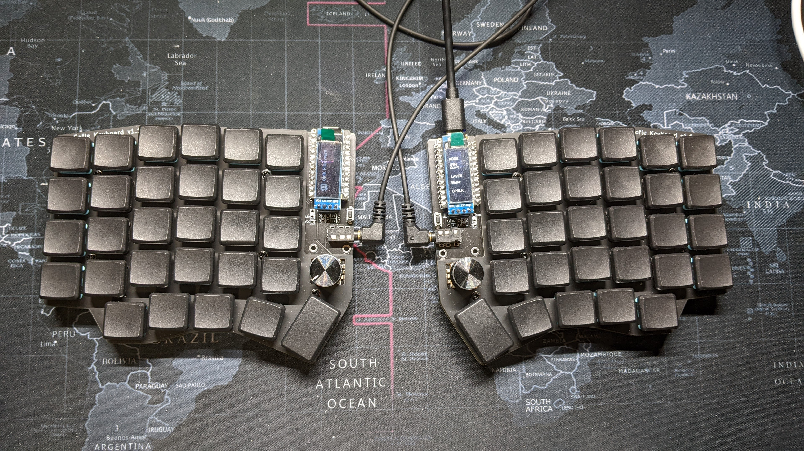

Hello everyone! I am Chia-Lun, I am from Taiwan. I am majoring in electrical engineering. I love ergonomic keyboards. I have built two so far. But I am not satisfied with just using other people's designs. One of the reasons I choose this major is I want to learn how the electronic coponents work and eventually build my own verson of keyboard. I also enjoy reading books, typing, and soldering.
I have been a member of the Church of Jesus Christ of Latter-day Saints my whole life. I served my mission in Canada, so the weather here doesn't botter me that much : ). One of my favorite quotes from Church leaders is from Elder Uchtdorf, "Do you want to change the shape of your life? Change the shape of your day. Do you want to change your day? Chage this hour. Change what you think, feel, and do at this very moment."
The picture down below is one of the keyboard I build.
